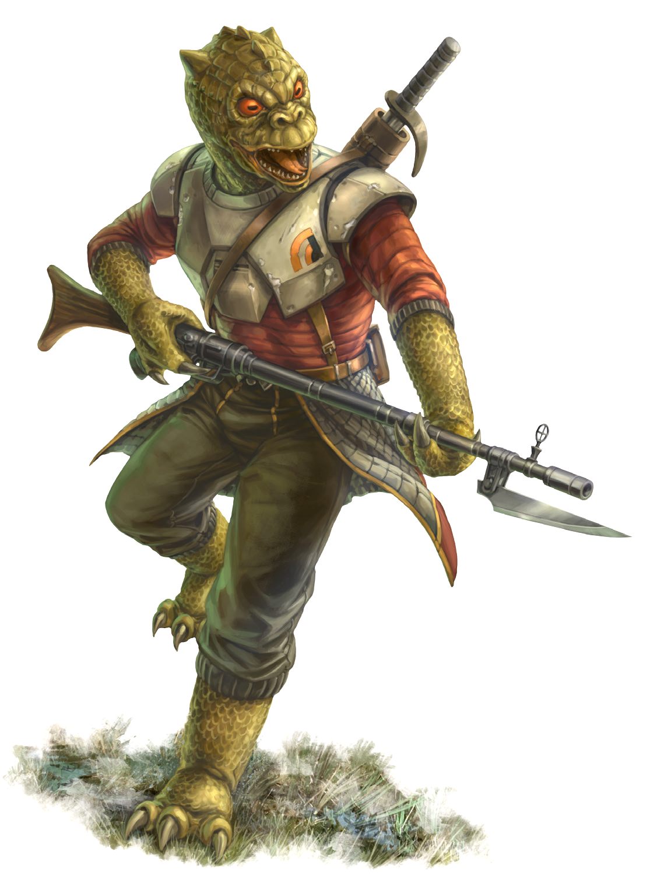

Trandoshan
Special Abilities: Trandoshans begin the game with one rank in Perception. They still may not train Perception above rank 2 during character creation.
Regeneration: Whenever a Trandoshan would recover one or more wounds from natural rest or recuperation in a Bacta tank, he recovers one additional wound. He does not recover one additional wound when receiving first aid or medical treatment from a character, or when using a stimpack. Trandoshans can regrow lost limbs as well, though it usually takes at least a month before the limb is usable.
Claws: When a Trandoshan makes Brawl checks to deal damage to an opponent, he deals +1 damage and has a Critical Rating of 3.
Trandoshans are belligerent, lizard-like humanoids who have an avowed hatred of Wookiees. They can be found wherever a strong hand or a big gun is desired.
Standing on average a little shorter than their Wookiee nemeses, the cold blooded Trandoshans' three-fingered hands lack the manual dexterity of a thumb, causing them difficulty manipulating technology. Making up for this clumsiness are the three enormous claws on each hand. Their supersensitive vision allows them to see the infrared spectrum. At younger ages, their regenerative powers are capable of restoring whole limbs if need be. Their scales range from bright green to orange, and can change in the molting season.
Trandoshans, who call themselves the "T'doshok" in Dosh, come from a society that emphasizes strength, skill at hunting, resilience, and self-reliance. Clutches of four eggs are raised by the mother (the father seldom has any involvement); young Trandoshans can walk and possess an instinctual hunting ability almost from birth. By two years of age, their mother takes them on their first hunts, and by ten they are largely self-sufficient.
Trandoshan society revolves around two things: the hunt, and worship of a goddess known as the Scorekeeper. She watches over the Trandoshan people, blessing or punishing them based on the success of their hunts. For each successful hunt and quarry brought to ground, the Trandoshans receive jagannath, "divine marks," that show a Trandoshan's status in society when tallied. As a Trandoshan gains jagannath, he also gains favor with the goddess. When a Trandoshan dies, he bows before the Scorekeeper and presents his jagannath quiver. That final tally of jagannath decides his place in the afterlife.
As Trandoshan society has evolved in the galactic community, the importance of the hunt has merged with other societal pursuits as well. Now, a Trandoshan doctor may "hunt" for a cure against a virulent disease threatening his people, or a Trandoshan engineer may "hunt" for better starship designs or more potent weaponry. In fact, almost any action that betters the Trandoshan people can be justified as a worthy "hunt" in the eyes of Trandoshan culture. Of course, this leaves little room for "frivolous" pursuits such as the arts.
Most Trandoshans call their home planet Hsskor, though outlanders know it as Trandosha or 'Dosha. Trandosha shares the same star as the Wookiee homeworld of Kashyyyk. Trandoshans also colonized Trandosha's forest moon Wasskah
The Trandoshan language, Dosh, sounds to the human ear like hisses and snarls. Trandoshans can learn and converse in Basic, though most of the words they speak carry a heavy sibilance.
Trandoshans constantly dream of succeeding in the hunt and receiving the Scorekeeper's blessing with jagannath. Military, goal-oriented professions like bounty hunting and mercenary work are well suited to a Trandoshan's hunter's instincts.
In the eyes of the Trandoshans, their feud with the Wookiees began when the Wookiees brutally killed the members of a peaceful Trandoshan scouting mission on Kashyyyk. The Wookiees' savagery caused the Trandoshans to believe the Wookiees were non-sapient barbarians and therefore had no resource rights to the planet. For added protection on their next mission, the Trandoshans brought a well-armed military force. Nonetheless, in the intervening years since the Trandoshans' first landing, the Wookiees had managed to decipher the engineering of the Trandoshans' scout vessel. After months of bloody conflict during which the Trandoshans served their goddess with distinction, the Wookiees overpowered the Trandoshans by sheer numbers. Further peaceful colonial missions by the Trandoshans met the same end.
The Trandoshans appealed to the Old Republic, but discovered that the Wookiees had already encountered the off-worlders and told their lies to the Senate. Soon it was the Wookiees who represented the Hsskassi system in the Senate, with no Trandoshan representatives. The Trandoshans felt isolated and had no recourse but war. The Republic eventually sent peacekeeping troops.
Chancellor Palpatine finally listened to the desperate pleas of the Trandoshans. Dignitaries convinced him to give them representation for the Hsskassi system in the Imperial Senate in return for helping quash the Wookiee rebellion on Kashyyyk. Moreover, the Trandoshan dignitaries promised to catch and deliver Wookiee slaves to the Empire. With Kashyyyk occupied by the Imperial military, the Trandoshans had at last gained the upper hand over their neighbors.
Not all Trandoshans agreed with this new approach. The Trandoshan Jedi Master Krassk M'ikosh, having tried for years to negotiate a peaceful settlement between the Wookiees and his own beloved people, died while protecting a Wookiee child against Trandoshan slavers.